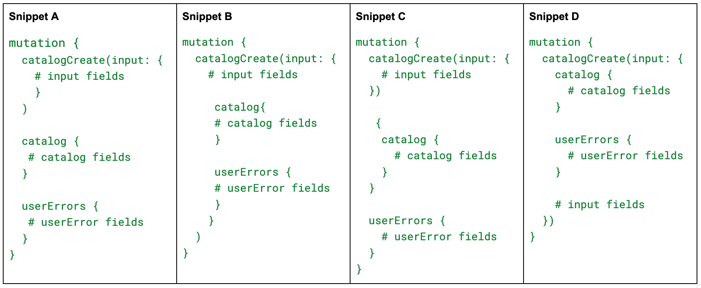
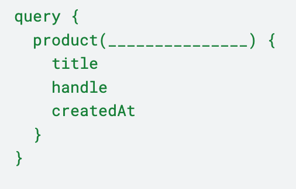
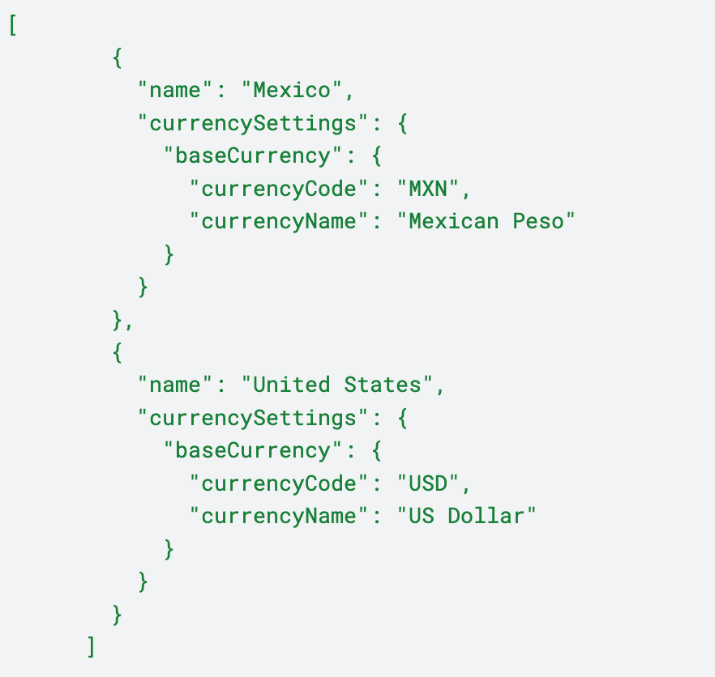
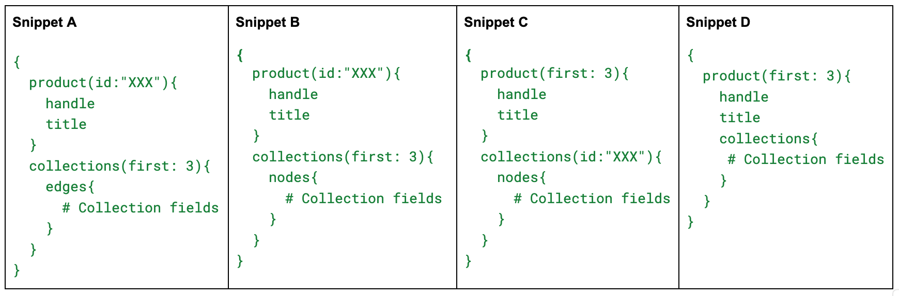

Shopify Development Fundamentals Assessment Ariel's Reviewer
Which of the following statement is true about this product?
Regular t-shirt
Sizes available: Small, Medium, Large
Colors available: Red, Green, Blue
Select the correct answer.
What is the primary purpose of using {% schema %} in a Liquid file?
Select the correct answer.
A client who runs a large ecommerce store wants to implement a loyalty program
for their customers. They need a dedicated page within the customer account
section where customers can view their loyalty points, redeem rewards, and track
their progress. The client also wants to ensure that this page is easy to manage
and update. Which approach would be the best solution to implement the loyalty
program?
Select the correct answer.
Where would you typically find static content like images, JavaScript, and CSS files in a Shopify theme’s
file structure?
Select the correct answer.
Which API is typically used for managing inventory, updating order statuses, and creating custom
reports in Shopify?
Select the correct answer.
When making API calls, you noticed that the data returned has some missing data fields compared to the
Shopify developer documentation. What might be the cause of this?
Select the correct answer.
You are working with a client who wants to integrate their Shopify store with an external system to
synchronize customer data. You are building out a minimum viable product and would like to test out the
connection. Which approach would be the best solution to meet the client's requirements?
Select
the correct answer.
How does Shopify's platform support developers who create custom solutions for brands?
Select the correct answer.
Your client would like to create a data model that contains the following
fields:
- `category` (Text: e.g., "shoes", "shirts", "pants")
-
`measurements` (JSON: size chart data)
- `instructions` (Rich Text)
The fields above will be assigned to each product based on its category.
For example, all items in the "pants" category will have the "pants" size chart.
Which of the following is the best method of implementation? Select the correct
answer.
Which of the following field values would be most likely to be found on the fulfillment object?
Select the correct answer.
Which of the following business types is the best use case for these objects?
|
- The `company` Liquid object represents a company that a customer is purchasing for. - The `company_location` Liquid object represents a location of the company that a customer is purchasing for. |
Select the correct answer.
What is the function of "blocks" within Shopify's theme architecture?
Select the correct
answer.
For a theme that is using Online Store 2.0
features, how would you include a section called "collection-banner" in a
collection page template?
Select the correct answer.
Which of the following is a key advantage of using webhook subscriptions over continuous polling?
Select the correct answer.
What is the role of "objects" in Liquid?
Select the correct answer.
You are a Shopify developer working with a wholesale supplier who wants to
display exclusive content to business customers. Given the client's requirements,
which Liquid tag would be most appropriate to use for implementing the solution?
Select the correct answer.
What is the difference between the theme editor and the web code editor?
Select the correct answer.
You are freelancing for a small business with limited technical expertise and a tight budget. They need an ecommerce platform with minimal maintenance and built-in commerce functionality. Why might Shopify be a suitable choice for this small business?
Select the correct answer.
In the Shopify theme architecture, which file type is used to configure settings
that merchants can adjust in the Shopify admin?
Select the correct
answer.
A client is interested in a new feature in beta released at the latest Editions.
They've asked you to demo it for them over a 15 min video call. Which settings
would you choose when creating a development store to demo the new feature?
Select the correct answer.
You are a Shopify developer working with a client who runs a mid-sized ecommerce
store. The client has specific requirements for their store's functionality that
are not fully met by the core Shopify platform. They need an app that can
integrate with their existing Customer Relationship Management (CRM) system and
provide advanced analytics on customer behavior. The client is also concerned
about data security and wants to ensure that any app used is reliable and
well-supported. Given the client's requirements and concerns, which option would
be the best and most effective approach to meet their needs?
Select the
correct answer.
What is the primary function of the Shopify Admin?
Select the correct
answer.
Your client wants to implement BOPIS (buy online, pick up in-store) as a selling
strategy. Which of the following Liquid object is most relevant to building out an
online store solution for this merchant?
Select the correct answer.
What are the two types of collections you can create in Shopify?
Select the correct answer.
Where are metaobjects definitions typically managed in a Shopify store?
Select the correct
answer.
Which of the following is the correct GraphQL structure to create a catalog and why?

We have provided a section of the Shopify developer documentation to guide you.
|
`catalogCreate` - mutation Arguments: - `input`: required CatalogCreatePayload returns
|
Select the correct answer.
What is the primary role of the `templates` directory in Shopify's theme
architecture?
Select the correct answer.
You are working with a high-end clothing business that wants to offer two types
of plans: "Try Before You Buy" and "Pre-order". Which Liquid object would you
interact with to implement the solution?
Select the correct answer.
Which of the following fits into the blank space in the query?

Select the correct answer.
Which Shopify primitive would you expect to contain the following information?

Select the correct answer.
Which object in Shopify's data model contains information about buyers who create
accounts or make purchases?
Select the correct answer.
Which of the following statements best describes the difference between custom
apps and public apps in Shopify?
Select the correct answer.
You have created a development store for a new apparel client by selecting
“Create a store for a client” and have uploaded Shopify’s dummy apparel data via
CSV to give the client a sense of their store’s new look and feel. You’ve given
the store a placeholder name for the time being. Is the development store
transferable?
Select the correct answer.
Claudesco sells thousands of replacement parts for manufacturing equipment.
Buyers need to reference product compatibility to ensure they’re ordering the
correct replacements. Claudesco stores part compatibility information in a
database. Which method would let Claudesco display this information on a product
page most effectively?
Select the correct answer.
Your client owns an olive oil business. As they are expanding their ecommerce
business, they would like to include the olive tree farm that every product is
sourced from on the product details page. The following is how the product details
page will display:
Premium Cold-Pressed Olive Oil
Sourced from:
Name:
Laurel Grove Olive Farm
Location: Sonoma Valley, California, USA
Sustainability practice:
- Organic farming
- Water conservation
-
Renewable energy
How would you implement the solution? Select the correct
answer.
In which of the following scenarios would using the API be more advantageous than
using webhooks?
Select the correct answer.
What is the primary purpose of using app proxies in Shopify?
Select the
correct answer.
Which directory in a Shopify theme is responsible for managing localization files
like translated content?
Select the correct answer.
If you are building a headless commerce solution where Shopify is used as the
backend, which API would you use to create a custom, unique shopping experience
for the customers?
Select the correct answer.
Which request type in REST is similar to a query in
GraphQL?
Select the correct answer.
What is the primary difference between continuous polling and webhook
subscriptions?
Select the correct answer.
What is a typical use case for Liquid?
Select the correct answer.
What is the purpose of the "sections" in Shopify themes?
Select the
correct answer.
Which of the following is the correct GraphQL structure to query a product and why?

We have provided a section of Shopify developer documentation to help you answer this question:
| `Product`
- object Fields - `handle` - String! - `title` - String! Connections - `collections` - [Collection!]! |
Select the correct answer.
Which of the following links the `collections` node to the `collections` connection?
Select the correct answer.